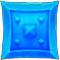
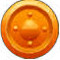

Composition
Compositions are broken down by the necessary number of tanks/healers/dps with the goal of having enough damage to kill the boss and enough healing to go around for all. Simply stated, the larger the group the more health the boss has so we can’t just bulk up with people and overpower them.
- Common compositions
- 10 people: 2/2/6
- 15 people: 2/3/9
- 20 people: 2/4/14
- 25 people: 2/4/19 or 2/5/18
- 30 people: 2/6/22
- Raid team roles
- The Raid leader will be your primary point of contact throughout the raid.
- Tanks will also have assist and will communicate with each other often to coordinate.
- Team captains are one representative each from healers, range dps, and melee dps who will assist others in their roles by keeping an eye out for improvements to be made and communicating to help things be noticed. We currently do not use team captains regularly but be aware of this concept.
Preparation
- Gear Preparation
- Gems Make sure socketed items have gems in them
- Enchants Check your gear to make sure nothing is missing an enchant
- Repairs Come in to raid at 100% durability
- Addons to Download Before Raid
- Deadly Boss Mods (DBM) This is the essential raid add on and it will help you by alerting you to dangerous mechanics and also helps us organize things like ready checks and pull timers
- Details Keep track of stats such as DPS, healing done, interrupts
- Pawn Used to weigh stats on gear and will guide you on what is and isn’t an upgrade
Etiquette
Discord
General rules and etiquette for voice chat- Be logged in and in Raid voice chat promptly
- You need to at least listen, even if you do not have a mic
- Keep chatter to a minimum once it’s Go Time
- If raid leader, tank, or team captain announce “CLEAR CHANNEL” that means be quiet and immediately stop talking, they need to communicate urgently
Timeliness
Follow these guidelines to keep things running efficiently- Be logged in and ready to summon 5 minutes before raid start time
- Our goal is to clear trash and be ready for our first boss pull at start time, not waiting to get people in the group and summoned
- RSVP on the Guild Calendar
- Knowing who to expect helps us adjust our composition well before raid start time so RSVP accurately and change your answer if necessary
- We value game/life balance and do not require 100% attendance, just that you do your best to communicate when you will and won’t be here
- Once we move on from Normal to Heroic, if you have missed several nights of raid you may have to PUG or see if the guild can run Normal to get you ready for Heroic due to the scale in difficulty
- Communicate if you are running late or will be absent unexpectedly whenever possible
- Plan your AFKs
- Starting to feel a tingle in your bladder or need to smoke? Pick a time such as trash fights whenever possible and let us know you’re away
- Be considerate of others’ time. You’re allowed to be human but do so quickly
- Don’t go into the raid until it’s confirmed ready
- If someone goes in but it’s set to the wrong difficulty wastes time as we have to get everyone back out to change it
- Be quick reforming between wipes
- We will often wipe*, when it happens please listen to instructions (such as if you’re told “DON’T RELEASE”), get back alive, eat your food, and be prepared to briefly assess our strategy and try again
- Try not to use wipes as bio breaks if possible, see above for AFK planning. This is a poor use of group time
Glossary
A DBM (Deadly Boss Mod) function. Players with assist are granted permissions similar to the raid leader and can move, add, and kick players in the raid. They can also perform tasks such as ready checks and pull timers. Players with assist are typically another form of leadership in the raid.
Spells and abilities that change or limit the movement of enemies. Includes stuns, banish, slows, roots, etc.
Created by alchemists and set down at the beginning of raid night. It has 30 flasks inside of it that adapt to be the primary stat for the character that drinks it. Replaces the need for individual flasks when available. To maximize its usefulness, if there are less than 30 people some (ideally a group of 15 so everyone can…) people can grab a flask from the cauldron, drink it, and then grab another for 1hr later when the first flask expires. These do not stack with individual flasks and you may only have 1 in your inventory at a time.
Finding a way around mechanics that makes it possible to beat the boss without doing what Blizz wants us to do.
Damage done by spells or abilities in a radius around the target enemy; hits other enemies in that radius. Use caution to avoid hitting enemies you do not want to touch.
Created by cooks and set down at the beginning of raid night and in between pulls/wipes if available. Feeds multiple people and provides the Well Fed buff with the player’s primary stat. Replaces the need for individual food. Does not stack with individual food buffs and one will replace the other. Feast buffs are typically better.
Ignore all other enemies, mechanics, etc and concentrate all power on killing the enemy you are being told to focus. For example, the boss is on 1% but the next round of mechanics that will wipe the group is going to go off, you might hear “Focus boss!” because the group’s ability to kill the boss if we work together is faster than the impending doom of mechanics. Also used when a mechanic is not being concentrated enough and is threatening large amounts of trouble. In that case you might hear “Focus adds!” and you’d stop doing damage to the boss in order to hurt the adds.
In raid there are multiple groups of 5 people shown on your user interface’s raid frames. These groups are often reorganized and people are moved around. Pay attention as sometimes you are told that groups may do different tasks.
The path of visibility from one character or NPC to another. Obstructing it on purpose or on accident can have various effects. A good effect: breaking line of sight by hiding behind something for a boss mechanic so it can’t hit you. A bad effect: breaking line of sight by hanging out around a corner where the healer’s spells can’t reach you.
Created by Raid Leader and Assists in DBM. Colorful shapes that can identify players and/or around the room.
They are:
They are:
 Silver moon
Silver moon- Yellow star
-  Blue square
 Red X
Red X- White skull
 Green triangle
Green triangle-  Orange circle
A group of people who do not normally play together such as guildmates do. Can be used to describe the group as a whole (“I was in a pug with people from LFG”) or individuals (“We didn’t have enough guildies on tonight so I had to get 2 pugs”).
Players can only consume 1 potion per battle, so to get around this, pre-potions are taken a few seconds before combat actually starts so it doesn’t count towards your 1 potion maximum. This way, you can benefit from a second potion later on in the fight. A great trick to amplify the effect is to take your second potion during heroism.
A term used to refer to engaging the boss in combat (“The tank will pull the boss and then we attack”) but also to refer to the entire attempt at killing the boss (“We killed that boss in 1 pull, nice!”).
DBM function. Your DBM will start counting down to alert players that at 0 the tank will engage the boss in combat. Typically set to 10 seconds though it is based on preference.
/range nWhen used, a small window will pop up showing what players are in that range. For example, if you need to stay 10 yards away from other players for a mechanic you would do
/range 10 and make sure that no names pop up in that window or else that means you’re too close.
Will pop up and ask if you are ready and will show a check mark on player frames who are ready and an X on those who are not. Also sometimes used to answer questions in yes/no format.
To purposefully take damage, usually for the sake of a mechanic. For example, if a spot will do raid wide damage if no one stands in it but a moderate amount of damage if someone does stand in it, then someone should stand in it to save the raid massive damage and they would be soaking it instead.
To move away from others in the raid. Do not stand on or near players if you are supposed to be spreading.
To stand on top of other player(s) location in the raid. Sometimes stacking will require just a few people, other times it will be the entire raid. Stacking can also be done in formations such as a line, where players are essentially close and touching but each one just slightly away from the one next to them.
Packs of enemies between bosses. These are sometimes as difficult as some bosses and can require strategy and mechanics occasionally. Often times they are just in the way and can be beaten down easily.
To die or fail an attempt at defeating the boss. A wipe can happen because everyone is dead or can be used to call for everyone to die because the outcome is clear that the fight will not be won and it is faster to die and reset to try again.